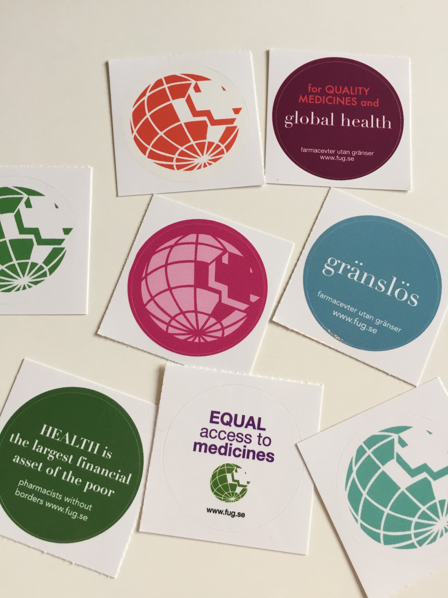
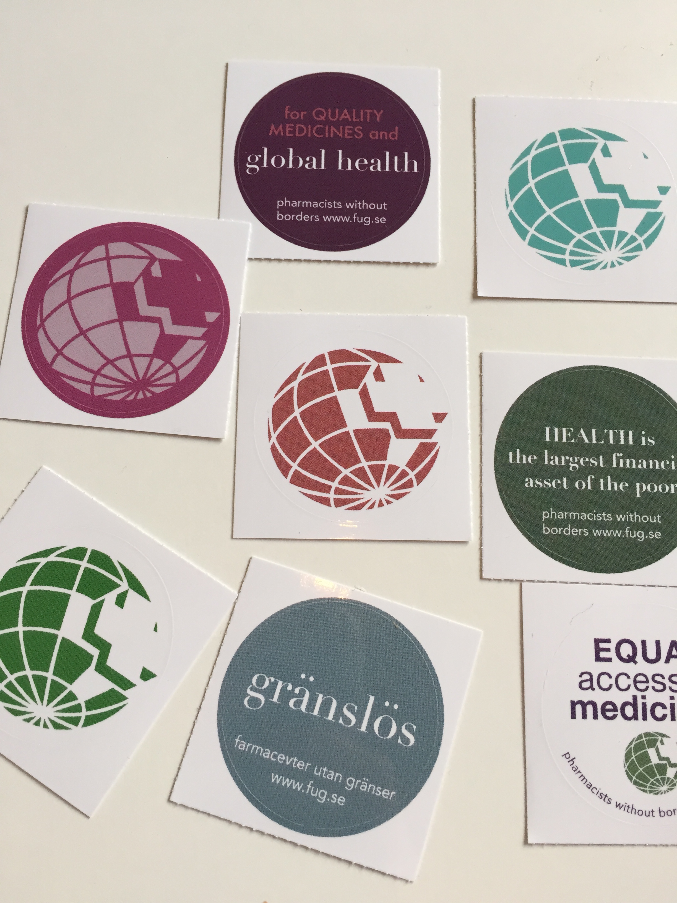
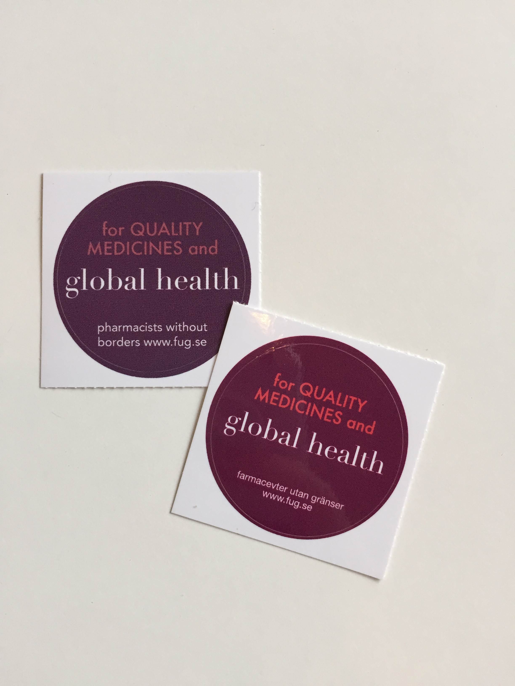
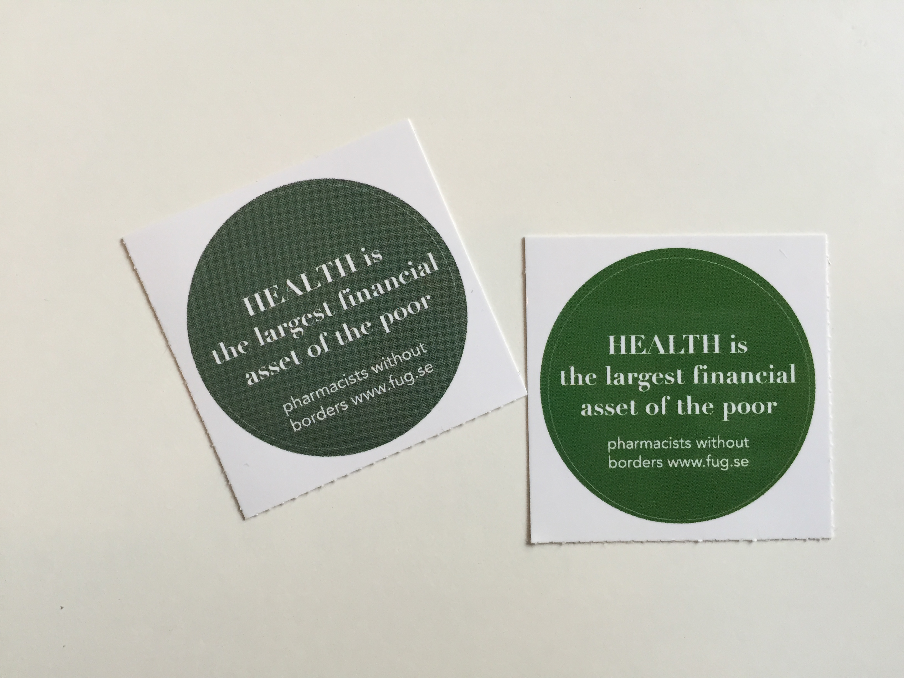
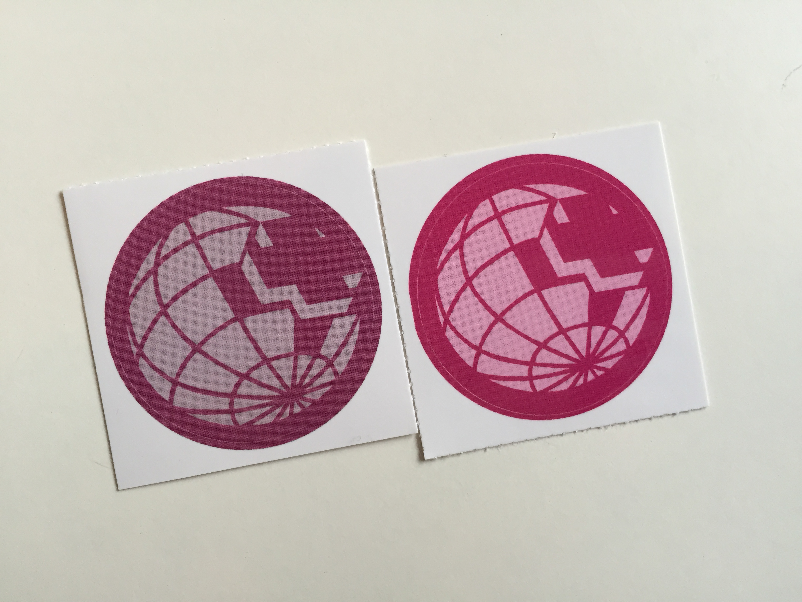
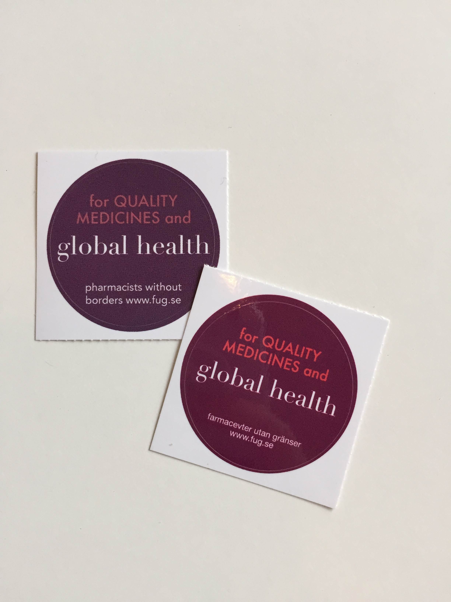
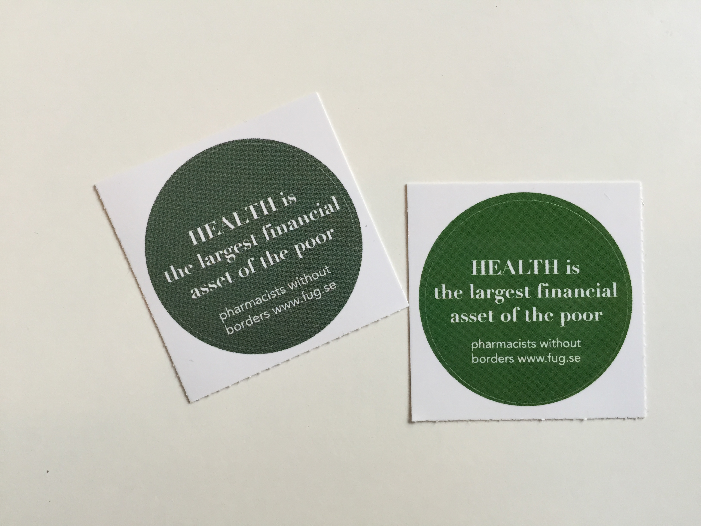
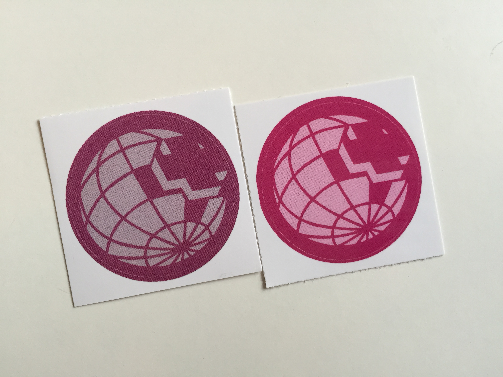

Help us Moo!
1. The order confirmation, I know colours are not exact, but it should be near enough. As you see, we use very bright colours.
2. The over all feel of the set. Our old order (that we were happy with) is in the image to the left. New order is on the right. It is alot more damp/gray and gives a dull impression.
 3. Some of the old and new side by side. Colours are nowhere near.
 





4. Moo, please help!